#reading in data set which is in excel format
# gtd <- read_excel('_data/globalterrorismdb_0522dist.xlsx')
head(gtd, n=100)# save.image("VishnupriyaVaradharaju.RData")Vishnupriya Varadharaju
December 22, 2022
Global Terrorism Dataset
26/11 (26 Nov) is a very heartbreaking day to remember for a lot of Indians. It was the day when India had one of its deadliest terror attacks. It happened in 2008 and I still remember watching the news for hourly updates on the terror attack. Every year when I come across this day, I always have a lot of questions in my head. How have the trends of Terrorism been over the years? Why are certain cities targeted more than others? What kind of weapons do different extremist groups use? Which is the most deadly extremist group? Is the extremism international or home-grown? and a lot more. The topic for my final project was inspired by this and I decided to do this study on Global Terrorism to help answer my questions. The Global Terrorism Database (GTD) contains more than 200,000 records of terrorist attacks that have taken place around the world from 1970 till 2022. This Database is maintained by the National Consortium for the Study of Terrorism and Responses to Terrorism (START) at the University of Maryland. The database has a codebook wherein detailed explanations for each of the categories are provided. The database has been used by popular news channels to showcase trends in Regional Terror activities. It has all the necessary elements that can help me answer various questions that I hope to find with this study.
The dataset is in the form of an excel file. It has nearly 209706 rows and 135 columns. Each row corresponds to a terror incident. The various fields include GTD ID, incident date, incident location, incident information, attack information, target/victim information, perpetrator information, perpetrator statistics, claims of responsibility, weapon information, casualty information, consequences, kidnapping/hostage taking information, additional and source information and many more. These fields need to be analysed and only the important ones are to be chosen for the study.
On having an initial overview of the data, there seems to be a lot of columns with plenty of NA values. Given that there are 135 columns, it will be good to remove those columns that might not add enough value to the analysis. This data has values that are a mix of different types ranging from numerical, character, logical and much more. There is some redundant data as well. Certain fields have categories that are encoded. But along with it the corresponding text variable is also given. For instance, country has codes for which country_txt has the corresponding text. Such fields can be removed to avoid redundancy. Some fields like summary, weapdetail have entirely textual data which is not useful for statistical analysis and can be removed.
tibble [209,706 × 135] (S3: tbl_df/tbl/data.frame)
$ eventid : num [1:209706] 1.97e+11 1.97e+11 1.97e+11 1.97e+11 1.97e+11 ...
$ iyear : num [1:209706] 1970 1970 1970 1970 1970 1970 1970 1970 1970 1970 ...
$ imonth : num [1:209706] 7 0 1 1 1 1 1 1 1 1 ...
$ iday : num [1:209706] 2 0 0 0 0 1 2 2 2 3 ...
$ approxdate : chr [1:209706] NA NA NA NA ...
$ extended : num [1:209706] 0 0 0 0 0 0 0 0 0 0 ...
$ resolution : POSIXct[1:209706], format: NA NA ...
$ country : num [1:209706] 58 130 160 78 101 217 218 217 217 217 ...
$ country_txt : chr [1:209706] "Dominican Republic" "Mexico" "Philippines" "Greece" ...
$ region : num [1:209706] 2 1 5 8 4 1 3 1 1 1 ...
$ region_txt : chr [1:209706] "Central America & Caribbean" "North America" "Southeast Asia" "Western Europe" ...
$ provstate : chr [1:209706] "National" "Federal" "Tarlac" "Attica" ...
$ city : chr [1:209706] "Santo Domingo" "Mexico city" "Unknown" "Athens" ...
$ latitude : num [1:209706] 18.5 19.4 15.5 38 33.6 ...
$ longitude : num [1:209706] -70 -99.1 120.6 23.8 130.4 ...
$ specificity : num [1:209706] 1 1 4 1 1 1 1 1 1 1 ...
$ vicinity : num [1:209706] 0 0 0 0 0 0 0 0 0 0 ...
$ location : chr [1:209706] NA NA NA NA ...
$ summary : chr [1:209706] NA NA NA NA ...
$ crit1 : num [1:209706] 1 1 1 1 1 1 1 1 1 1 ...
$ crit2 : num [1:209706] 1 1 1 1 1 1 1 1 1 1 ...
$ crit3 : num [1:209706] 1 1 1 1 1 1 1 1 1 1 ...
$ doubtterr : num [1:209706] 0 0 0 0 -9 0 0 1 0 0 ...
$ alternative : num [1:209706] NA NA NA NA NA NA NA 2 NA NA ...
$ alternative_txt : chr [1:209706] NA NA NA NA ...
$ multiple : num [1:209706] 0 0 0 0 0 0 0 0 0 0 ...
$ success : num [1:209706] 1 1 1 1 1 1 0 1 1 1 ...
$ suicide : num [1:209706] 0 0 0 0 0 0 0 0 0 0 ...
$ attacktype1 : num [1:209706] 1 6 1 3 7 2 1 3 7 7 ...
$ attacktype1_txt : chr [1:209706] "Assassination" "Hostage Taking (Kidnapping)" "Assassination" "Bombing/Explosion" ...
$ attacktype2 : num [1:209706] NA NA NA NA NA NA NA NA NA NA ...
$ attacktype2_txt : chr [1:209706] NA NA NA NA ...
$ attacktype3 : logi [1:209706] NA NA NA NA NA NA ...
$ attacktype3_txt : logi [1:209706] NA NA NA NA NA NA ...
$ targtype1 : num [1:209706] 14 7 10 7 7 3 3 21 4 2 ...
$ targtype1_txt : chr [1:209706] "Private Citizens & Property" "Government (Diplomatic)" "Journalists & Media" "Government (Diplomatic)" ...
$ targsubtype1 : num [1:209706] 68 45 54 46 46 22 25 107 28 21 ...
$ targsubtype1_txt : chr [1:209706] "Named Civilian" "Diplomatic Personnel (outside of embassy, consulate)" "Radio Journalist/Staff/Facility" "Embassy/Consulate" ...
$ corp1 : chr [1:209706] NA "Belgian Ambassador Daughter" "Voice of America" NA ...
$ target1 : chr [1:209706] "Julio Guzman" "Nadine Chaval, daughter" "Employee" "U.S. Embassy" ...
$ natlty1 : num [1:209706] 58 21 217 217 217 217 218 217 217 217 ...
$ natlty1_txt : chr [1:209706] "Dominican Republic" "Belgium" "United States" "United States" ...
$ targtype2 : num [1:209706] NA NA NA NA NA NA NA NA NA NA ...
$ targtype2_txt : chr [1:209706] NA NA NA NA ...
$ targsubtype2 : num [1:209706] NA NA NA NA NA NA NA NA NA NA ...
$ targsubtype2_txt : chr [1:209706] NA NA NA NA ...
$ corp2 : chr [1:209706] NA NA NA NA ...
$ target2 : chr [1:209706] NA NA NA NA ...
$ natlty2 : num [1:209706] NA NA NA NA NA NA NA NA NA NA ...
$ natlty2_txt : chr [1:209706] NA NA NA NA ...
$ targtype3 : num [1:209706] NA NA NA NA NA NA NA NA NA NA ...
$ targtype3_txt : chr [1:209706] NA NA NA NA ...
$ targsubtype3 : num [1:209706] NA NA NA NA NA NA NA NA NA NA ...
$ targsubtype3_txt : chr [1:209706] NA NA NA NA ...
$ corp3 : chr [1:209706] NA NA NA NA ...
$ target3 : chr [1:209706] NA NA NA NA ...
$ natlty3 : num [1:209706] NA NA NA NA NA NA NA NA NA NA ...
$ natlty3_txt : chr [1:209706] NA NA NA NA ...
$ gname : chr [1:209706] "MANO-D" "23rd of September Communist League" "Unknown" "Unknown" ...
$ gsubname : chr [1:209706] NA NA NA NA ...
$ gname2 : chr [1:209706] NA NA NA NA ...
$ gsubname2 : logi [1:209706] NA NA NA NA NA NA ...
$ gname3 : logi [1:209706] NA NA NA NA NA NA ...
$ gsubname3 : logi [1:209706] NA NA NA NA NA NA ...
$ motive : chr [1:209706] NA NA NA NA ...
$ guncertain1 : num [1:209706] 0 0 0 0 0 0 0 0 0 0 ...
$ guncertain2 : num [1:209706] NA NA NA NA NA NA NA NA NA NA ...
$ guncertain3 : logi [1:209706] NA NA NA NA NA NA ...
$ individual : num [1:209706] 0 0 0 0 0 0 0 0 0 0 ...
$ nperps : num [1:209706] NA 7 NA NA NA -99 3 -99 1 1 ...
$ nperpcap : num [1:209706] NA NA NA NA NA -99 NA -99 1 1 ...
$ claimed : num [1:209706] NA NA NA NA NA 0 NA 0 1 0 ...
$ claimmode : num [1:209706] NA NA NA NA NA NA NA NA 1 NA ...
$ claimmode_txt : chr [1:209706] NA NA NA NA ...
$ claim2 : num [1:209706] NA NA NA NA NA NA NA NA NA NA ...
$ claimmode2 : logi [1:209706] NA NA NA NA NA NA ...
$ claimmode2_txt : logi [1:209706] NA NA NA NA NA NA ...
$ claim3 : logi [1:209706] NA NA NA NA NA NA ...
$ claimmode3 : logi [1:209706] NA NA NA NA NA NA ...
$ claimmode3_txt : logi [1:209706] NA NA NA NA NA NA ...
$ compclaim : logi [1:209706] NA NA NA NA NA NA ...
$ weaptype1 : num [1:209706] 13 13 13 6 8 5 5 6 8 8 ...
$ weaptype1_txt : chr [1:209706] "Unknown" "Unknown" "Unknown" "Explosives" ...
$ weapsubtype1 : num [1:209706] NA NA NA 16 NA 5 2 16 19 20 ...
$ weapsubtype1_txt : chr [1:209706] NA NA NA "Unknown Explosive Type" ...
$ weaptype2 : num [1:209706] NA NA NA NA NA NA NA NA NA NA ...
$ weaptype2_txt : chr [1:209706] NA NA NA NA ...
$ weapsubtype2 : num [1:209706] NA NA NA NA NA NA NA NA NA NA ...
$ weapsubtype2_txt : chr [1:209706] NA NA NA NA ...
$ weaptype3 : num [1:209706] NA NA NA NA NA NA NA NA NA NA ...
$ weaptype3_txt : chr [1:209706] NA NA NA NA ...
$ weapsubtype3 : num [1:209706] NA NA NA NA NA NA NA NA NA NA ...
$ weapsubtype3_txt : chr [1:209706] NA NA NA NA ...
$ weaptype4 : logi [1:209706] NA NA NA NA NA NA ...
$ weaptype4_txt : logi [1:209706] NA NA NA NA NA NA ...
$ weapsubtype4 : logi [1:209706] NA NA NA NA NA NA ...
$ weapsubtype4_txt : logi [1:209706] NA NA NA NA NA NA ...
$ weapdetail : chr [1:209706] NA NA NA "Explosive" ...
$ nkill : num [1:209706] 1 0 1 NA NA 0 0 0 0 0 ...
[list output truncated]There are different aspects to look into while cleaning a data set. Null values can be removed, redundant values can be avoided, re-coding data categories and much more.
Generally, it is good to have data which has less than 5% of NA values for analysis. But for my study, I am pushing it to 10%. I am dropping all those fields that have more than 10% of Null values. This is to ensure generalization and to avoid incorrect results.
# To find those columns which have more than 10% of null values
cols <- list()
for (col in names(gtd)) {
nullVal <- (sum(is.na(gtd[,col]))/nrow(gtd))*100
if (nullVal > 10){
cols <- append(cols, col)
}
}
print(paste("Number of columns with NA > 10% is", length(cols)))[1] "Number of columns with NA > 10% is 90"After removing the null values there are 45 fields that are remaining.
The column eventID 12 digit event ID system where in the first 8 numbers correspond to the date in “yyyymmdd” format. The last 4 numbers are sequential case number for that given day of the format 0001, 0002, etc. This can be removed and new column incDate is created combining the iyear, imonth and iday. This field will be useful for creating time-series plot. Fields with encoded text categories are also removed.
Using summarytools to get an overview of the data. The min, max, most frequently occurring categories, the percentage of null values, the data types and more information can be obtained from this.
From the above table we can see that the range of the data is from January 1970 to December 2020, spanning over 50 years. For the columns imonth and iday, there are entries of 0. This is done for those incidents where the date and month are not surely known. There are 891 values like that which can be retained for now and modified when needed for the visualizations.
We can see how the number of incidents has changed over time using a time series plot.
incCount <- gtd_select %>% group_by(iyear) %>% summarise(incidents = n())
ggplot(incCount, aes(x=iyear, y=incidents, color="red")) + ggtitle("Global Terror Incidents 1970-2020") +labs(y="Incidents", x ="Year") + theme(axis.text.x=element_text(angle=60, hjust=1)) +
geom_line() + geom_point() + theme(legend.position = "none")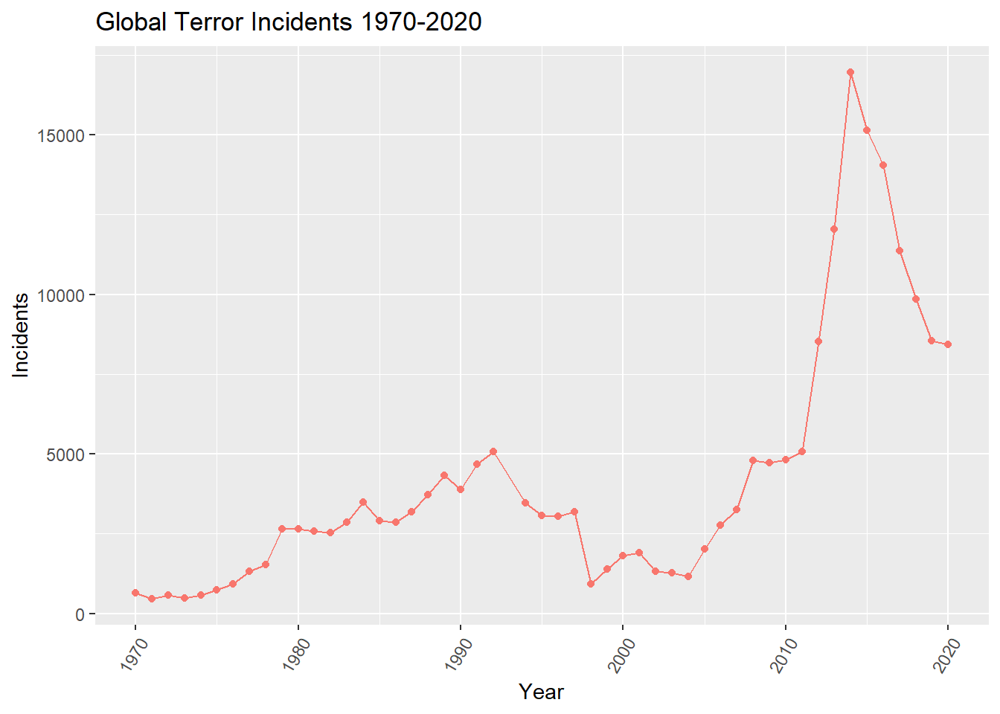
The extended column tells if the duration of an incident is more than 24 hours (then 1) or if it’s less than 24 hours (then 0). The country_txt column shows the top countries where the most terror incidents have occurred. We can see that Iraq has the highest number of incidents, then comes Afghanistan, Pakistan, India and Columbia. A lot of middle east and Asian countries have the highest terror incidents. On plotting region_txt, we can see the distribution of the incidents across 12 different regions. The countries that come under each of these regions can be referred from the GTD Codebook. The plot shows that Middle East & North Africa and South Asia have nearly same number of terror incidents and constitute for nearly 53% of global terror incidents.
# top regions with most terror attacks over the years
regionCnt <- gtd_select %>% group_by(region_txt) %>% summarise(Incidents = n()) %>% arrange(desc(Incidents)) %>% head(n=10)
regionCnt %>% arrange(desc(Incidents)) %>%
mutate(name=factor(region_txt, levels=Incidents)) %>%
ggplot(aes(x=reorder(region_txt, +Incidents), y=Incidents)) +
geom_segment(aes(xend=region_txt, yend=0)) +
geom_point(size=4, color="red") +
coord_flip() +
theme_bw() + ggtitle("Region-Wise Terror Incidents 1970-2020") + labs(y="Incidents", x ="Regions")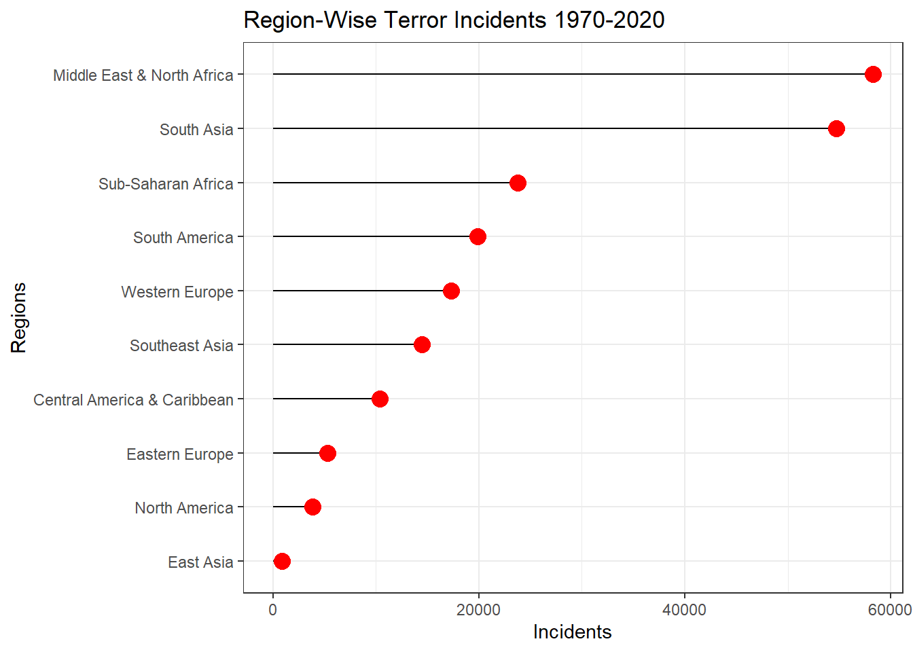
Next, I want to see those cities in Western Europe (specifically) where highest number of terror incidents have occurred. Plotting the top 10 cities. There is an entry called unknown which can be ignored for this analysis.
cities <- gtd_select %>% filter(region_txt == "North America" & city != "Unknown") %>% group_by(city, longitude, latitude) %>% summarise(count = n()) %>% arrange(desc(count)) %>% head(n=11)
usa <- map_data("usa")
canada <- map_data("worldHires", "Canada")
mexico <- map_data("worldHires", "Mexico")
NAmap <- ggplot() + geom_polygon(data = usa,
aes(x=long, y = lat, group = group),
fill = "white",
color="black") +
geom_polygon(data = canada, aes(x=long, y = lat, group = group),
fill = "white", color="black") +
geom_polygon(data = mexico, aes(x=long, y = lat, group = group),
fill = "white", color="black") +
coord_fixed(xlim = c(-140, -55), ylim = c(10, 85), ratio = 1.2)
NAmap + geom_point(data=cities, aes(x=longitude, y=latitude, color=city, label=city), size=3.0) + ggtitle("Cities with highest terror rate in North America 1970-2020") +
theme(line = element_blank(),
axis.text.x = element_blank(),
axis.text.y = element_blank(),
axis.ticks = element_blank(),
rect = element_blank()) + labs(x="", y="",color="City")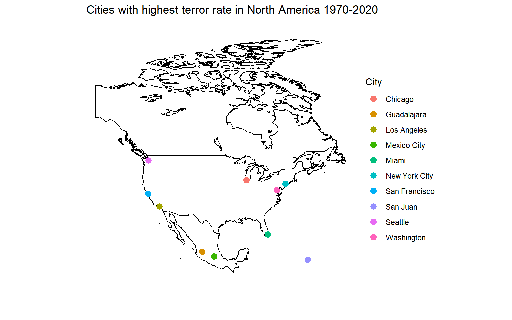
The next column vicinity has 1, if the incident happened in immediate vicinity of the city or has 0, if the incident happened in the city itself. The fields crit1, crit2 and crit3 indicate the criteria under which the incident has occurred. * Criterion 1: POLITICAL, ECONOMIC, RELIGIOUS, OR SOCIAL GOAL * Criterion 2: INTENTION TO COERCE, INTIMIDATE OR PUBLICIZE TO LARGER AUDIENCE(S) * Criterion 3: OUTSIDE INTERNATIONAL HUMANITARIAN LAW There are incidents where there is an overlap of all three criterias. These can be filtered for further analysis later on.
multiple corresponds to 1, if the incident was part of multiple attacks, else it is 0. The percentage of single incidents is much higher than multiple incidents. success corresponds to 1, if the attack was successful, else it is 0. The attacks can be assassination, armed assault, bombing/explosion, hijacking, hostage taking(barricade or kidnapping), facility/infrastructure attack and unarmed assault. There have been nearly 88% of successful attacks compared to 12% of unsuccessful attacks. suicide corresponds to 1, if it was a suicide attack where the perpetrator did not intend to escape from the attack alive, 0 otherwise. Only 3.5% of the attacks were suicide attacks. This can mean that the perpetrators intended to live to carry out future attacks.
attacktype1_txt has 9 subcategories of the type of terror attack. One of the field is unknown wherein the attack type could not be determined from the available information. We can see from the plot, that through all years, Bombing/Explosin has been the most common attack type.
# bar plot
attck <- gtd_select %>% filter(attacktype1_txt != 'Unknown') %>% group_by(iyear, attacktype1_txt) %>% summarise(incidents = n())
ggplot(attck, aes(fill=attacktype1_txt, y=incidents, x=iyear)) +
geom_bar(position="stack", stat="identity") + labs(x="Year", y="Incidents", title ="Terror Attack Types Over The Years", fill="Attack Type")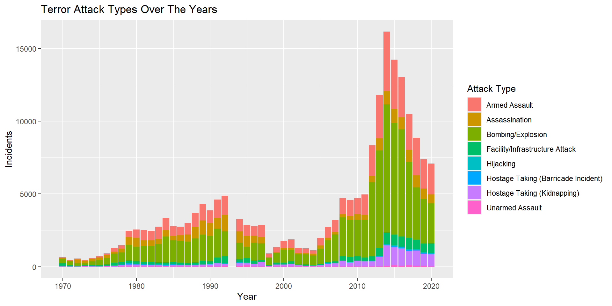
targtype1_txt corresponds to the general type of target/victim. There are 22 categories with the highest category being Private Citizens and Property. Next comes the Military, then the Police, then the Government and then Business. There is an Unknown category here as well. We can ignore targsubtype1_txt for now as it has nearly 112 different subcategories of the main target type. target1 is also too broad a category and is ignored for now.
natlty1_txt is the nationality of the Target/Victim. Here, in most cases it is same as that of the country in which the incident took place, but for Hijacking incidents, it is the nationality of the plane and not the passengers. Plotting a graph to see the nationalities of the planes in Hijacking incidents. The most number of such incidents has happened in India followed by Colombia. We can also see a category called International, which might imply that the incident happened while flying over more than one country.
ntlt <- gtd_select %>% filter(attacktype1_txt == 'Hijacking') %>% group_by(natlty1_txt) %>% summarise(incidents = n()) %>% arrange(desc(incidents)) %>% head(n=10)
ntlt %>% ggplot(aes(x=reorder(natlty1_txt, +incidents), y=incidents)) +
geom_bar(stat="identity", fill="#f68060", alpha=.6, width=.4)+
coord_flip() +
theme_bw() + ggtitle("Flight Hijakcing Incidents 1970-2020") + labs(x="Country", y ="Incidents")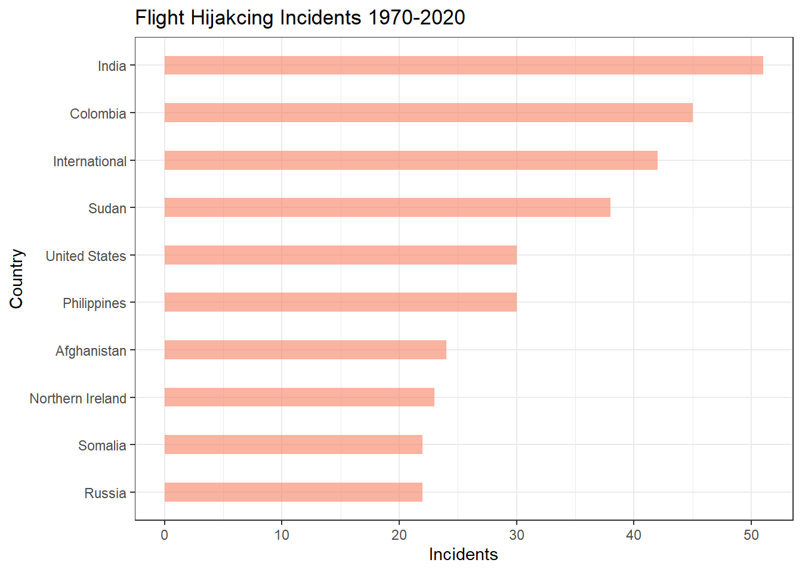
gname tells us about the extremist group that was responsible for the terror attack. For nearly 43% of the incidents, the group that is responsible is unknown. From the known groups, the highest is Taliban followed by ISIS, then Shining Path (SL) and then Al-Shabaab.
guncertain1 corresponds to 1, if the information reported about the attack group is based on speculation or dubious claims of responsibility. It is 0, if the perpetrator for the incident is not suspected. This value is nearly 92.4% for 0.
individual is 1, if the perpetrator was not affliated to any known group and was by themselves. It was 0 otherwise. Only 0.4% of the incidents were caused by such individuals.
weaptype1_txt correspond to the different categories of weapons used. There are 13 different categories including Other (weapons that do not fit into the other categories) and Unknown (weapon type could not be determined). The most used weapon is explosives, followed by Firearms.
weap <- gtd_select %>% group_by(weaptype1_txt) %>% summarise(incidents = n()) %>%
mutate(weaptype1_txt =
case_when(
weaptype1_txt == "Vehicle (not to include vehicle-borne explosives, i.e., car or truck bombs)" ~ "Vehicle",
TRUE ~ as.character(weaptype1_txt)
), fraction = incidents/sum(incidents), ymax = cumsum(fraction), ymin = c(0,head(ymax, n=-1))
)
# Make the plot
ggplot(weap, aes(ymax=ymax, ymin=ymin, xmax=4, xmin=3, fill=weaptype1_txt)) +
geom_rect() +
coord_polar(theta="y") + scale_fill_brewer(palette = "Paired") +
xlim(c(2, 4)) + guides(fill = guide_legend(title = "Weapon Type")) +
theme(panel.background = element_rect(fill = "white"),
panel.grid = element_blank(),
axis.title = element_blank(),
axis.ticks = element_blank(),
axis.text = element_blank()) + ggtitle("Weapons Used for Terror Incidents 1970-2020")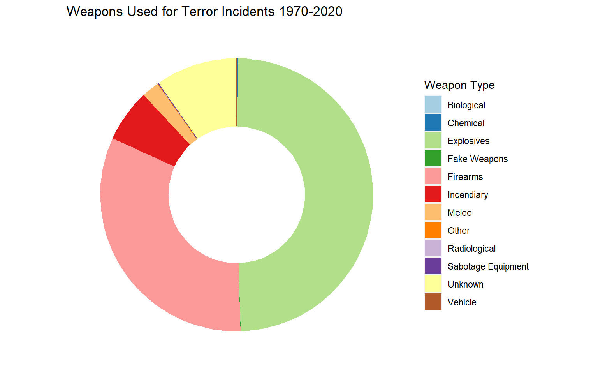
nkill and nwound are numerical fields that correspond to the number of people killed and the number of people wounded respectively. From these fields less than 10% of the data are Nulls. We can combine these two into a single field to find the total number of casualties due to a terror incident. The mean casualties is near 5, the median is 1. The min is 0 and max is 12263. On plotting the histogram, it is seen that the plot is severely right skewed (highly positive skewness value).
gtd_select <- gtd_select %>% mutate(
ncasual = nkill+nwound, .before = nkill
)
cas <- gtd_select %>% filter(is.na(ncasual)==FALSE)
summary(cas$ncasual) Min. 1st Qu. Median Mean 3rd Qu. Max.
0.000 0.000 1.000 5.234 4.000 12263.000 [1] 204.8766ggplot(cas, aes(x=ncasual))+
geom_histogram(color="darkblue", fill="lightblue") + ggtitle("Casualties Histogram") +
labs(x="Casualties", y="Incidents Count")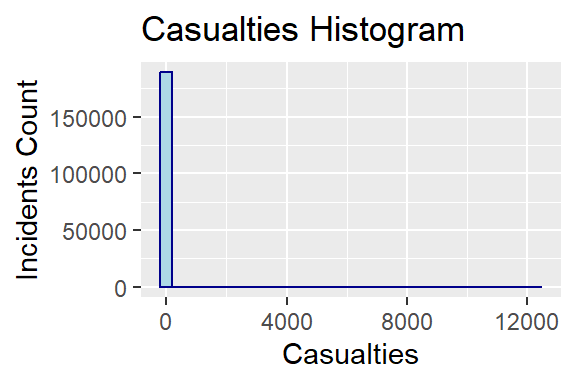
property is 1 (49.1%), if property was damaged, else it is 0 (37.5%). There is also another entry of ‘-9’ (13.4%) which corresponds to those incidents for which there is not enough data. This can be ignored during visualization.
ishostkid is 1 (8.0%), if the victim was taken hostage or kidnapped, else it is 0 (91.7%). The ‘-9’ (0.3%) category corresponds to unknown entries which can be ignored during visualization.
dbsource had details about the teams that took efforts to collect and consolidate all this data. Currently, it is being maintained and constantly updated by the START team at University of Maryland. But, there have been other groups that have helped with this data collection through the years. From the summarytable, we can see that nearly 50% of the data was collected by START and nearly 30% of the data was collected by PGIS. But I would like to know which team was responsible for the collection of the data through the years. From the plot, we can see that during the early years, PGIS played a major role in collecting the data, then CETIS for a couple of years, followed by ISVG. Finally START took over to maintain the database entirely. Overlapping of these major teams is not seen from the plot. There are however, other smaller teams which have contributed occasionally to the database.
#Grouping the data and choosing only the top 8 teams (START, PGIS, ISVG, CETIS, CAIN, UMD Schmid 2012, Hewitt Project, UMD Algeria 2010-2012) that have aided with the data collection process.
sources <- c('START', 'PGIS', 'ISVG', 'CETIS', 'CAIN', 'UMD Schmid 2012', 'Hewitt Project', 'UMD Algeria 2010-2012')
dbsrc <- gtd_select %>% filter(str_detect(dbsource, str_c(sources, collapse = "|")), is.na(incDate) == FALSE)
new <- dbsrc %>% mutate(
yrmon = ym(str_c(iyear,imonth, sep="/"))) %>% select(c(yrmon,dbsource)) %>% group_by(yrmon, dbsource) %>%
summarise(count= n())
ggplot(new, aes(x=yrmon, y=count, fill=dbsource)) +
geom_area() + ggtitle("Database Collection from 1970 through 2020") +
labs(x="Year", y="Incidents", fill="Source")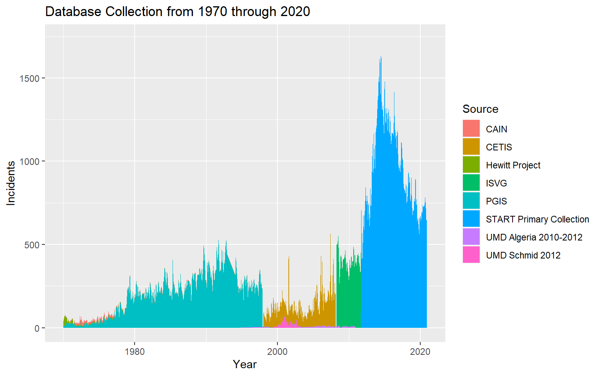
INT_LOG, INT_IDEO,INT_MISC, INT_ANY are representations of international attacks. If the value is 1, it implies that the nationality of the attack group/perpetrator is different from that of the victim/target. It is 0 otherwise. There is also ‘-9’ for those incidents that do not have enough information. Here I am ignoring INT_MISC and combining the remaining three columns into a single column. Even if any one of the fields have 1, then it will be considered international. If all have ‘-9’, then those rows are dropped for visualization.
On dropping the unknown values, we can see that International Terror incidents were nearly 37% and domestic events were nearly 63%. To explore further, I want to see how many terror attacks were domestic and how many were by international extremists in Western Europe Vs South Asia.
int <- gtd_select %>% filter(intNew!=-9) %>% group_by(intNew, region_txt) %>%
summarise(fatal = sum(ncasual, na.rm=TRUE)) %>%
mutate(intNew =
case_when(
intNew == 1 ~ 'International',
intNew == 0 ~ 'Domestic',
TRUE ~ as.character("na")
)
)
ggplot(int, aes(y=fatal, x=intNew, fill=intNew)) +
geom_bar(position="stack", stat="identity") + labs(x="", y="Incidents", title ="Domestic Vs International Terror Attacks across regions from 1970-2020", fill="Category" ) + facet_wrap(~region_txt)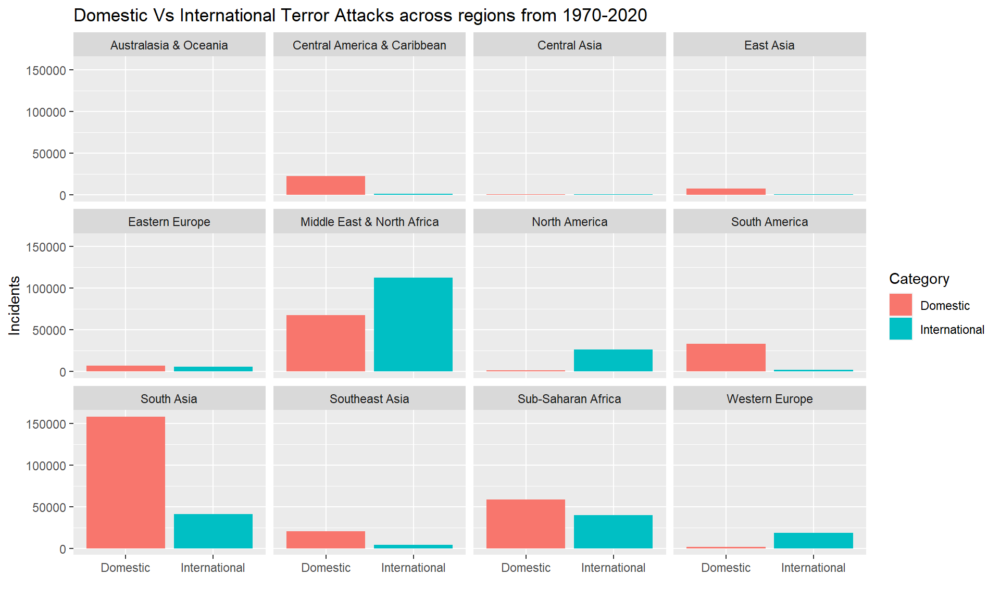
From the above plot, we can see the variations between different regions. In South Asia, South America, Sub-Saharan Africa we see more domestic attacks than international. While in North America, Western Europe, Middle East & North Africa, we see more international attacks than domestic. More analysis can be done on the origin of the extreme groups and their targets. This can help us understand if there is a direct relation between the main location of the extremist group and the location of their target. It could explain the higher number of domestic threats in South Asia, which could be because of higher number of extremist groups from that region.
So far, I have included descriptive statistics of the data. I’ve retained all the necessary fields and values upon which I can perform further analysis to find answers to my research questions.
How has terrorism spread throughout the world since 1970 until now? Are there some regions which have constantly faced terror attacks? Are there regions that had previously no terror attacks, but are suddenly under plenty of terror attacks?
Can correlations be drawn between different numerical fields of this dataset? This can help look at relations between certain factors in the dataset.
Do certain terror groups have certain ways of attacking? What kind of weapons do they use the most?
Trends of the most popular terror groups throughout the years. It’ll be good to visualize the rise and fall of different extremist groups over the years. This visualization can help us ponder into why a particular group thrived during certain periods.
What is the average number of people who are killed per terror attack? How does this change region-wise?
With the tidied dataset, I would like to answer the research questions that I had posed in the previous section.
Firstly I am splitting the years into four sections - 1970-1984, 1984-1999, 2000-2009, 2010-2020. Plotting the world map for each incident separately along with the distribution of successful and unsuccessful attacks are also shown.
# create data for world coordinates using map_data() function
world <- map_data("world")
# converting the success from numerical into categorical data type
gtd_select <- within(gtd_select, {
success.cat <- NA # need to initialize variable
success.cat[success == 0] <- "Unsuccessful"
success.cat[success == 1] <- "Successful"
} )
plot0 <- gtd_select %>% filter(iyear < 1985)
plot1 <- gtd_select %>% filter(iyear >= 1985 & iyear < 2000)
plot2 <- gtd_select %>% filter(iyear >= 2000 & iyear < 2010)
plot3 <- gtd_select %>% filter(iyear >= 2010)
ggplot() +
geom_map(
data = world, map = world,
aes(long, lat, map_id = region),
color = "white", fill = "lightgray", size = 0.1
) + geom_point(
data = plot0,
aes(longitude, latitude,
color = success.cat),
alpha = 0.5
) +
theme_void() + labs(x = NULL, y = NULL, color = "Attack Status")+
labs(title="Global Terror Attacks 1970-1984")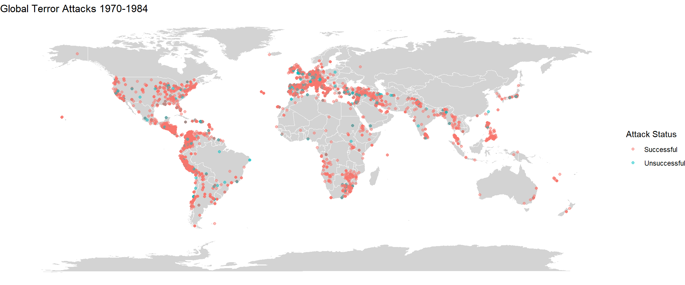
ggplot() +
geom_map(
data = world, map = world,
aes(long, lat, map_id = region),
color = "white", fill = "lightgray", size = 0.1
) + geom_point(
data = plot1,
aes(longitude, latitude,
color = success.cat),
alpha = 0.5
) +
theme_void() + labs(x = NULL, y = NULL, color = "Attack Status")+
labs(title="Global Terror Attacks 1984-1999")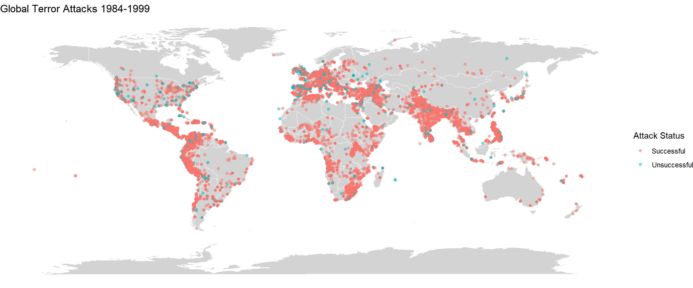
ggplot() +
geom_map(
data = world, map = world,
aes(long, lat, map_id = region),
color = "white", fill = "lightgray", size = 0.1
) +
geom_point(
data = plot2,
aes(longitude, latitude,
color = success.cat),
alpha = 0.5
) + labs(x = NULL, y = NULL, color = "Attack Status")+
theme_void() +
labs(title="Global Terror Attacks 2000-2009")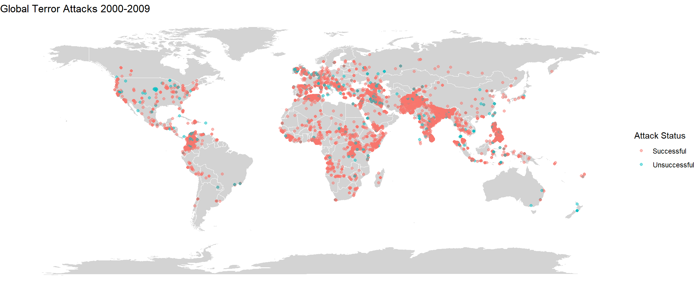
ggplot() +
geom_map(
data = world, map = world,
aes(long, lat, map_id = region),
color = "white", fill = "lightgray", size = 0.1
) +
geom_point(
data = plot3,
aes(longitude, latitude,
color = success.cat),
alpha = 0.5
) +
labs(x = NULL, y = NULL, color = "Attack Status")+
theme_void() +
labs(title="Global Terror Attacks 2010-2020")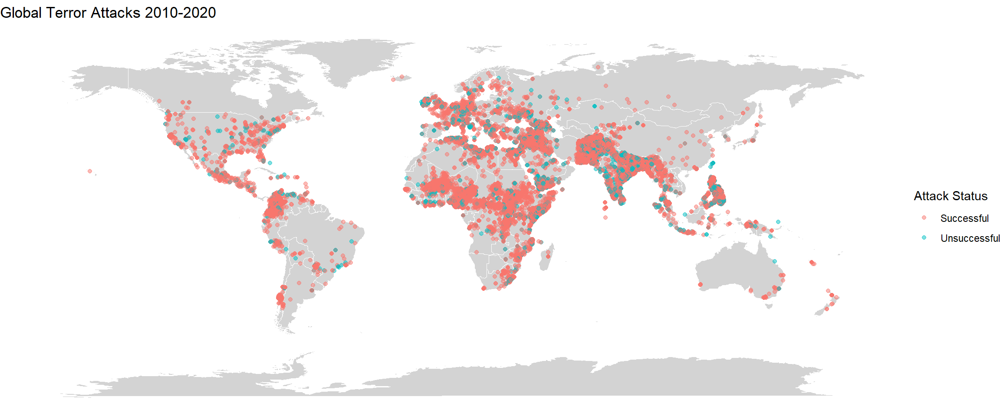
There is stark difference between the four plots. We can very clearly see that there has been a rise in the incidents from 1984-1999 and then it has reduced from 2000-2009. Then again during 2010-2020, the incidents have risen globally. Over the years, there has been an increase in the number of incidents in mid African region. In South America, compared to 1984-1999, the incidents of terrorism is lower in 2010-2020. We can also see that the density of the incidents has risen by large proportions in regions of India, Afghanistan, Pakistan, Iran, Iraq and parts of Europe. These plots give a good idea about how terror activites have spread over the years. The difference could also be because of military coups or independence struggles in a lot of countries especially in South America and Africa which would’ve occurred during 1984-1999. The figure also shows that there have been far many successful terror attacks than unsuccessful ones.
Drawing a correlation plot can help us determine those numerical variables that are related to other variables. I would like to know such factors which have strong correlation as it can help derive lots of conclusions. Some of the categorical variables like extended, multiple, success are all one-hot encoded and hence can be used as numerical data.
corFeat <- gtd_select[,c("iyear","imonth","iday","extended","vicinity","multiple","success","suicide","guncertain1","individual","nkill", "nwound","property","ishostkid","intNew")]
corFeat <- na.omit(corFeat)
correlations <- cor(corFeat)
corrplot(correlations, method="circle", order = 'alphabet')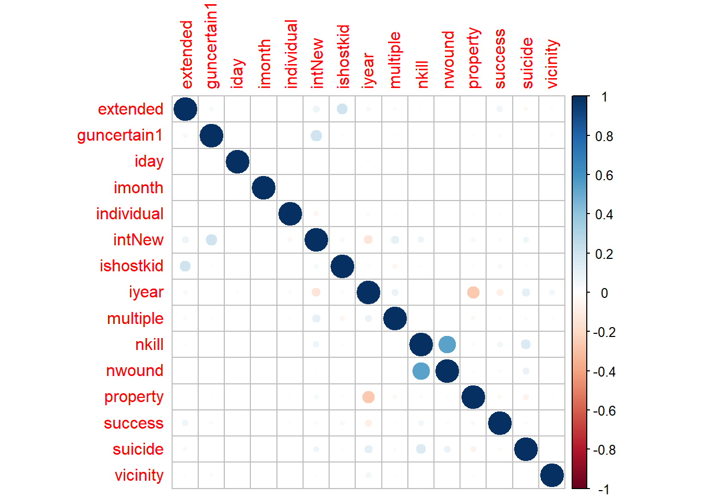
From this plot we can see that there is not much correlation between the numerical features of the cleaned data. Only nwound and nkill tend to show high correlation. This is probably because they both are the casualties and terror attack damages can cause death or injure civilians/people. We can also see low correlation between property damage feature and the year. Another low correlation is also seen between intNew and guncertain1. The small correlation between idhostkid and extended can be explained. extend tells if the terror activity is for more than 24 hours or not and idhostkid, tells us if the terror groups have kidnapped hostages or not. Usually, there will be negotiations in such hostage situations which will take time and hence can relate to the terror incident lasting for more than 24 hours. The relations between other factors seem to be pretty weak.
Here, I am selecting the top 6 deadly terror groups based on the highest number of casualties. Then on plotting the different attack types used by each group, we can see the most popular method of terror attack that a group follows. Furthermore, on including the weapon type as a sub group, we can see the respective weapons that are being used for carrying out the attacks.
trgrp <- gtd_select %>% select(iyear, incDate, gname, region_txt) %>% filter(gname != "Unknown") %>%
group_by(gname) %>% summarise(incidents = n()) %>% arrange(desc(incidents)) %>% head(n=6)
names <- c(trgrp$gname)
int <- gtd_select %>% select(attacktype1_txt, weaptype1_txt, gname)
grpattack <- subset(int, gname %in% names) %>% group_by(gname, attacktype1_txt, weaptype1_txt) %>%
summarise(incidents = n()) %>%
mutate(weaptype1_txt =
case_when(
weaptype1_txt == "Vehicle (not to include vehicle-borne explosives, i.e., car or truck bombs)" ~ "Vehicle",
TRUE ~ as.character(weaptype1_txt)
))
ggplot(grpattack, aes(x=incidents, y=attacktype1_txt , fill=weaptype1_txt)) +
geom_bar(position="stack", stat="identity") + labs(y="Attack Type", x="Incidents", title ="Attack Type Distribution for Top 6 Terror Groups 1970-2020", fill ="Weapon Type") + facet_wrap(~gname) 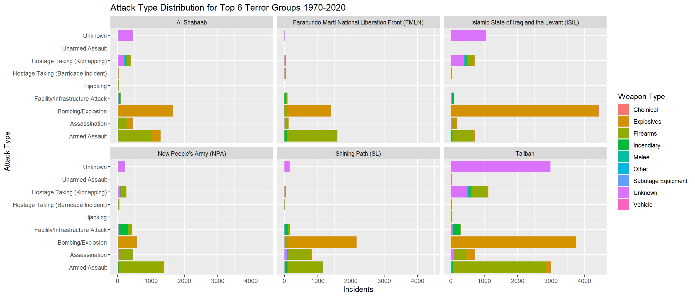
From above, we can see that Taliban has the highest number of attacks with Bombing/Explosion and Armed Assault being nearly equal. There is also an Unknown type of attack that the Taliban follow which is used as much as Bombing/Explosion and Armed Assault. It is good to do research into what this Unknown type might be as it constitutes a major portion of the attack for the most deadliest group. Similarly for other groups like ISIL, Shining Path, we can see that Bombing/Explosion and Armed Assault are the most common attack types. For these attacks, Explosives and Firearms are the weapons that are used. For the Unknown attack type, weapons that are still Unknown are used. Out of the different weapon types, Chemical, Melee, Sabotage Equipment and Vehicles are almost not used or very minimally used. Unarmed Assault, Hostage Taking (Barricade Incident) and Hijacking are also the least popular attack types among these groups. This plot gives an overall idea of the most preferred attack types and weapon types that are used by the deadliest terror groups around the world.
I wanted to see how the different extremist groups have lasted through different years. Was there any group that had a downfall? Was there any group that had a sudden uprising? Selecting a few groups only as there are 2000+ such extremist groups.
grp <- gtd_select %>% select(iyear, incDate, gname, region_txt) %>% filter(gname != "Unknown") %>% filter(gname == "Taliban" | gname == "Islamic State of Iraq and the Levant (ISIL)" | gname == "Al-Shabaab" | gname == "Boko Haram" | gname == "Shining Path (SL)" | gname == "New People's Army (NPA)" | gname == "Farabundo Marti National Liberation Front (FMLN)" | gname == "Houthi extremists (Ansar Allah)" | gname == "Irish Republican Army (IRA)" | gname == "Kurdistan Workers' Party (PKK)") %>%
group_by(iyear, gname) %>% summarise(incidents = n()) %>% arrange(desc(incidents))
ggplot(grp, aes(x=iyear, y=incidents, color=gname)) + ggtitle("Terror Group Wise Attacks 1970-2020") + labs(y="Incidents", x ="Year", color="Terror Groups") + theme(axis.text.x=element_text(angle=60, hjust=1)) +
geom_line() + geom_point(size=0.6) 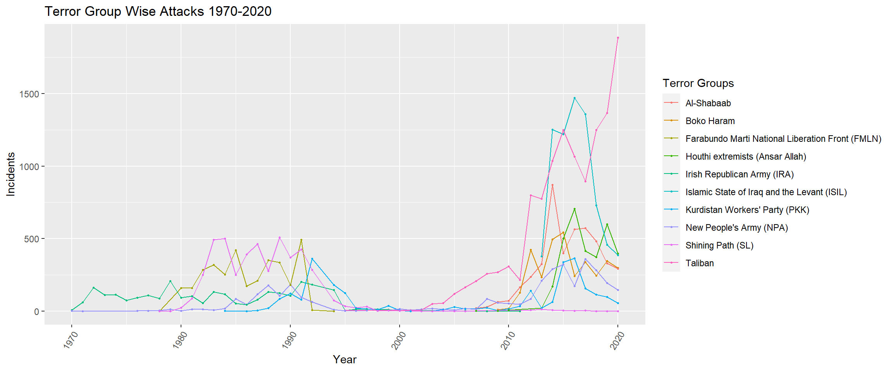
From this plot, we can very clearly see that initially there were only about 2-4 groups that were deadly. But in 2020, there are nearly 8 of these deadly terror groups that exist and have carried out terror activities. The Taliban started off in the 2000s and has jumped quickly from 2010 to 2020 to be the most deadly terror group globally. Similarly the ISIL group is also relatively new, having started off in 2013 and peaking during 2016-2017 and has declined in 2020. Furthermore, between the periods of 1996 to 2005, it looks like these terror groups were nascent, waiting to carry out the terror activities over the next decade. This line graph gives an overview of how these different terror groups have grown and declined over the years.
I wanted to find the average number of casualties (deaths + wounded) in a terror attack in each region. This can tell the degree of damage that can be expected if a terror attack occurs in a particular place.
avgCas <- gtd_select %>% select(ncasual, region_txt) %>% group_by(region_txt) %>% summarise(sumcas= sum(ncasual, na.rm=TRUE), incident= n()) %>% mutate(
avgCasReg = sumcas/incident
) %>% arrange(desc(avgCasReg)) %>% select(region_txt, avgCasReg) %>% rename(Region = region_txt, AverageCasualtyPerAttack = avgCasReg)
avgCasEast Asia has the highest average number of casualties per attack. Next is North America. Though South Asia has the second highest number of terror attacks, the average casualty per attack is somewhat in the median of the values. South America has the least average number of casualties per attack.
This project helped me understand the process of data visualization and analysis. How to convert raw data into information that can be easily conveyed and is useful? For this particular study, I had to make a couple of assumptions in order to simplify the dataset. The codebook had mentioned very nuanced details with respect to the attack type, the duration of the event, if multiple incidents were linked, is the incident idealogically or logistically international and much more. While performing the data analysis I made sure to read through the description and only use that information which will be useful for my work. Given that this dataset is pretty huge I found it hard to figure out how to clean the dataset and reduce the dimensions. Initially I wasn’t sure if I had to drop certain null values, or if I should retain some categories or should I re code Unknown variables and much more. Nearly 80% of my time was spent in cleaning the data to arrive at what was needed for this study. There is so much more that can be done with this dataset. Getting into the granularity of each country and analysing the activities of each terror group can give a lot of insights into local terror groups. This dataset also had a lot of textual data in the form of summary and notes. NLP methods can be applied to these text based fields to group most commonly used words occurring with an event, etc. In my study, I have not imputed the data for a lot of fields, instead I dropped them. But some fields can be imputed based on previous activities. This can help maintain the features of the dataset. Currently, I had dropped more than 50% of the columns as there were plenty of null values.
This study has answered a lot of questions that had me pondering upon initially. Incidents of terror attacks have increased during the last 10 years when compared with the years before that. However, these terror incidents are not always constant in a particular region. There are groups that become nascent for sometime before rising up again. Correlation between certain features of the data could not be drawn successfully. But correlated features could be identified if the region or country is narrowed down. The Taliban is the deadliest terror group with the highest number of casualties. Their most common type of attack methods include Bombing & Explosions and Armed Assault. They also do have other types of attack methods which have not been identified currently and need to be explored. Though the number of incidents and casualties are higher in Middle East & North Africa and South Asian regions, the average number of casualties is highest in East Asia followed by North America. There is no limit to the inferences that can be made from analysing this dataset. It’ll be good to know why certain terror groups rose and became frequent with their terror activity and why suddenly they declined. This can help us relate to other global scenarios that have occurred. Some terror activities may have had long term impact on victims. Some victims/targets may not have been killed during the incident, but they could’ve passed away sometime after the incident. Though it is hard to keep track of this, it’ll help provide an accurate number for the number of casualties. The dataset had extensive information that could answer all of my research questions. But it would be beneficial to get into the granularity of the dataset for intricate analysis.
---
title: "How has Terrorism Grown Over The Years ? - A Visual Study"
author: "Vishnupriya Varadharaju"
desription: "Final Project"
date: "12/22/2022"
format:
html:
toc: true
code-copy: true
code-tools: true
smooth-scroll: true
highlight-style: github
df-print: paged
categories:
- FinalProject
- Global Terrorism Data
output: distill::distill_article
---
```{r setup, include=FALSE}
library(tidyverse)
library(ggplot2)
library(lubridate)
library(dplyr)
library("readxl")
library(summarytools)
library(mapdata)
library(maptools)
library(moments)
library(corrplot)
load("VishnupriyaVaradharaju.RData")
knitr::opts_chunk$set(echo = TRUE, warning = FALSE, message = FALSE)
```
## DACSS 601: Data Science Fundamentals Final Paper
Global Terrorism Dataset
## Introduction
26/11 (26 Nov) is a very heartbreaking day to remember for a lot of Indians. It was the day when India had one of its deadliest terror attacks. It happened in 2008 and I still remember watching the news for hourly updates on the terror attack. Every year when I come across this day, I always have a lot of questions in my head. How have the trends of Terrorism been over the years? Why are certain cities targeted more than others? What kind of weapons do different extremist groups use? Which is the most deadly extremist group? Is the extremism international or home-grown? and a lot more.
The topic for my final project was inspired by this and I decided to do this study on Global Terrorism to help answer my questions.
The Global Terrorism Database (GTD) contains more than 200,000 records of terrorist attacks that have taken place around the world from 1970 till 2022. This Database is maintained by the National Consortium for the Study of Terrorism and Responses to Terrorism (START) at the University of Maryland. The database has a codebook wherein detailed explanations for each of the categories are provided. The database has been used by popular news channels to showcase trends in Regional Terror activities.
It has all the necessary elements that can help me answer various questions that I hope to find with this study.
## Data
### Reading The Dataset
The dataset is in the form of an excel file. It has nearly 209706 rows and 135 columns. Each row corresponds to a terror incident. The various fields include GTD ID, incident date, incident location, incident information, attack information, target/victim information, perpetrator information, perpetrator statistics, claims of responsibility, weapon information, casualty information, consequences, kidnapping/hostage taking information, additional and source information and many more.
These fields need to be analysed and only the important ones are to be chosen for the study.
```{r}
#reading in data set which is in excel format
# gtd <- read_excel('_data/globalterrorismdb_0522dist.xlsx')
head(gtd, n=100)
# save.image("VishnupriyaVaradharaju.RData")
```
### Describing The Data
On having an initial overview of the data, there seems to be a lot of columns with plenty of NA values. Given that there are 135 columns, it will be good to remove those columns that might not add enough value to the analysis.
This data has values that are a mix of different types ranging from numerical, character, logical and much more. There is some redundant data as well. Certain fields have categories that are encoded. But along with it the corresponding text variable is also given. For instance, *country* has codes for which *country_txt* has the corresponding text. Such fields can be removed to avoid redundancy.
Some fields like *summary*, *weapdetail* have entirely textual data which is not useful for statistical analysis and can be removed.
```{r}
str(gtd)
```
### Tidying Data
There are different aspects to look into while cleaning a data set. Null values can be removed, redundant values can be avoided, re-coding data categories and much more.
#### 1. Removing null values
Generally, it is good to have data which has less than 5% of NA values for analysis. But for my study, I am pushing it to 10%. I am dropping all those fields that have more than 10% of Null values. This is to ensure generalization and to avoid incorrect results.
```{r}
# To find those columns which have more than 10% of null values
cols <- list()
for (col in names(gtd)) {
nullVal <- (sum(is.na(gtd[,col]))/nrow(gtd))*100
if (nullVal > 10){
cols <- append(cols, col)
}
}
print(paste("Number of columns with NA > 10% is", length(cols)))
gtd_select <- gtd %>% select(-(unlist(cols)))
```
After removing the null values there are 45 fields that are remaining.
##### 2. Data Summary & Cleaning
The column *eventID* 12 digit event ID system where in the first 8 numbers correspond to the date in "yyyymmdd" format. The last 4 numbers are sequential case number for that given day of the format 0001, 0002, etc. This can be removed and new column *incDate* is created combining the *iyear*, *imonth* and *iday*. This field will be useful for creating time-series plot. Fields with encoded text categories are also removed.
```{r}
gtd_select <- gtd_select %>% mutate(
incDate = ymd(str_c(iyear,imonth,iday, sep="/")),.before = iyear) %>%
select(-c(eventid, country,region,specificity,doubtterr,attacktype1,targtype1,targsubtype1,natlty1,weaptype1))
```
Using summarytools to get an overview of the data. The min, max, most frequently occurring categories, the percentage of null values, the data types and more information can be obtained from this.
```{r}
dfSummary(gtd_select)
```
From the above table we can see that the range of the data is from January 1970 to December 2020, spanning over 50 years. For the columns *imonth* and *iday*, there are entries of 0. This is done for those incidents where the date and month are not surely known. There are 891 values like that which can be retained for now and modified when needed for the visualizations.
```{r}
gtd_select %>% filter(imonth == 0 | iday ==0) %>% count()
```
We can see how the number of incidents has changed over time using a time series plot.
```{r}
incCount <- gtd_select %>% group_by(iyear) %>% summarise(incidents = n())
ggplot(incCount, aes(x=iyear, y=incidents, color="red")) + ggtitle("Global Terror Incidents 1970-2020") +labs(y="Incidents", x ="Year") + theme(axis.text.x=element_text(angle=60, hjust=1)) +
geom_line() + geom_point() + theme(legend.position = "none")
```
The *extended* column tells if the duration of an incident is more than 24 hours (then 1) or if it's less than 24 hours (then 0).
The *country_txt* column shows the top countries where the most terror incidents have occurred. We can see that Iraq has the highest number of incidents, then comes Afghanistan, Pakistan, India and Columbia. A lot of middle east and Asian countries have the highest terror incidents.
On plotting *region_txt*, we can see the distribution of the incidents across 12 different regions. The countries that come under each of these regions can be referred from the GTD Codebook. The plot shows that Middle East & North Africa and South Asia have nearly same number of terror incidents and constitute for nearly 53% of global terror incidents.
```{r}
# top regions with most terror attacks over the years
regionCnt <- gtd_select %>% group_by(region_txt) %>% summarise(Incidents = n()) %>% arrange(desc(Incidents)) %>% head(n=10)
regionCnt %>% arrange(desc(Incidents)) %>%
mutate(name=factor(region_txt, levels=Incidents)) %>%
ggplot(aes(x=reorder(region_txt, +Incidents), y=Incidents)) +
geom_segment(aes(xend=region_txt, yend=0)) +
geom_point(size=4, color="red") +
coord_flip() +
theme_bw() + ggtitle("Region-Wise Terror Incidents 1970-2020") + labs(y="Incidents", x ="Regions")
```
Next, I want to see those cities in Western Europe (specifically) where highest number of terror incidents have occurred. Plotting the top 10 cities. There is an entry called unknown which can be ignored for this analysis.
```{r fig.height= 5, fig.width=8}
cities <- gtd_select %>% filter(region_txt == "North America" & city != "Unknown") %>% group_by(city, longitude, latitude) %>% summarise(count = n()) %>% arrange(desc(count)) %>% head(n=11)
usa <- map_data("usa")
canada <- map_data("worldHires", "Canada")
mexico <- map_data("worldHires", "Mexico")
NAmap <- ggplot() + geom_polygon(data = usa,
aes(x=long, y = lat, group = group),
fill = "white",
color="black") +
geom_polygon(data = canada, aes(x=long, y = lat, group = group),
fill = "white", color="black") +
geom_polygon(data = mexico, aes(x=long, y = lat, group = group),
fill = "white", color="black") +
coord_fixed(xlim = c(-140, -55), ylim = c(10, 85), ratio = 1.2)
NAmap + geom_point(data=cities, aes(x=longitude, y=latitude, color=city, label=city), size=3.0) + ggtitle("Cities with highest terror rate in North America 1970-2020") +
theme(line = element_blank(),
axis.text.x = element_blank(),
axis.text.y = element_blank(),
axis.ticks = element_blank(),
rect = element_blank()) + labs(x="", y="",color="City")
```
The next column *vicinity* has 1, if the incident happened in immediate vicinity of the city or has 0, if the incident happened in the city itself.
The fields *crit1*, *crit2* and *crit3* indicate the criteria under which the incident has occurred.
* Criterion 1: POLITICAL, ECONOMIC, RELIGIOUS, OR SOCIAL GOAL
* Criterion 2: INTENTION TO COERCE, INTIMIDATE OR PUBLICIZE TO LARGER AUDIENCE(S)
* Criterion 3: OUTSIDE INTERNATIONAL HUMANITARIAN LAW
There are incidents where there is an overlap of all three criterias. These can be filtered for further analysis later on.
*multiple* corresponds to 1, if the incident was part of multiple attacks, else it is 0. The percentage of single incidents is much higher than multiple incidents.
*success* corresponds to 1, if the attack was successful, else it is 0. The attacks can be assassination, armed assault, bombing/explosion, hijacking, hostage taking(barricade or kidnapping), facility/infrastructure attack and unarmed assault. There have been nearly 88% of successful attacks compared to 12% of unsuccessful attacks.
*suicide* corresponds to 1, if it was a suicide attack where the perpetrator did not intend to escape from the attack alive, 0 otherwise. Only 3.5% of the attacks were suicide attacks. This can mean that the perpetrators intended to live to carry out future attacks.
*attacktype1_txt* has 9 subcategories of the type of terror attack. One of the field is unknown wherein the attack type could not be determined from the available information. We can see from the plot, that through all years, Bombing/Explosin has been the most common attack type.
```{r fig.width=10}
# bar plot
attck <- gtd_select %>% filter(attacktype1_txt != 'Unknown') %>% group_by(iyear, attacktype1_txt) %>% summarise(incidents = n())
ggplot(attck, aes(fill=attacktype1_txt, y=incidents, x=iyear)) +
geom_bar(position="stack", stat="identity") + labs(x="Year", y="Incidents", title ="Terror Attack Types Over The Years", fill="Attack Type")
```
*targtype1_txt* corresponds to the general type of target/victim. There are 22 categories with the highest category being Private Citizens and Property. Next comes the Military, then the Police, then the Government and then Business. There is an Unknown category here as well. We can ignore *targsubtype1_txt* for now as it has nearly 112 different subcategories of the main target type. *target1* is also too broad a category and is ignored for now.
*natlty1_txt* is the nationality of the Target/Victim. Here, in most cases it is same as that of the country in which the incident took place, but for Hijacking incidents, it is the nationality of the plane and not the passengers. Plotting a graph to see the nationalities of the planes in Hijacking incidents. The most number of such incidents has happened in India followed by Colombia. We can also see a category called International, which might imply that the incident happened while flying over more than one country.
```{r}
ntlt <- gtd_select %>% filter(attacktype1_txt == 'Hijacking') %>% group_by(natlty1_txt) %>% summarise(incidents = n()) %>% arrange(desc(incidents)) %>% head(n=10)
ntlt %>% ggplot(aes(x=reorder(natlty1_txt, +incidents), y=incidents)) +
geom_bar(stat="identity", fill="#f68060", alpha=.6, width=.4)+
coord_flip() +
theme_bw() + ggtitle("Flight Hijakcing Incidents 1970-2020") + labs(x="Country", y ="Incidents")
```
*gname* tells us about the extremist group that was responsible for the terror attack. For nearly 43% of the incidents, the group that is responsible is unknown. From the known groups, the highest is Taliban followed by ISIS, then Shining Path (SL) and then Al-Shabaab.
*guncertain1* corresponds to 1, if the information reported about the attack group is based on speculation or dubious claims of responsibility. It is 0, if the perpetrator for the incident is not suspected. This value is nearly 92.4% for 0.
*individual* is 1, if the perpetrator was not affliated to any known group and was by themselves. It was 0 otherwise. Only 0.4% of the incidents were caused by such individuals.
*weaptype1_txt* correspond to the different categories of weapons used. There are 13 different categories including Other (weapons that do not fit into the other categories) and Unknown (weapon type could not be determined). The most used weapon is explosives, followed by Firearms.
```{r fig.width = 8}
weap <- gtd_select %>% group_by(weaptype1_txt) %>% summarise(incidents = n()) %>%
mutate(weaptype1_txt =
case_when(
weaptype1_txt == "Vehicle (not to include vehicle-borne explosives, i.e., car or truck bombs)" ~ "Vehicle",
TRUE ~ as.character(weaptype1_txt)
), fraction = incidents/sum(incidents), ymax = cumsum(fraction), ymin = c(0,head(ymax, n=-1))
)
# Make the plot
ggplot(weap, aes(ymax=ymax, ymin=ymin, xmax=4, xmin=3, fill=weaptype1_txt)) +
geom_rect() +
coord_polar(theta="y") + scale_fill_brewer(palette = "Paired") +
xlim(c(2, 4)) + guides(fill = guide_legend(title = "Weapon Type")) +
theme(panel.background = element_rect(fill = "white"),
panel.grid = element_blank(),
axis.title = element_blank(),
axis.ticks = element_blank(),
axis.text = element_blank()) + ggtitle("Weapons Used for Terror Incidents 1970-2020")
```
*nkill* and *nwound* are numerical fields that correspond to the number of people killed and the number of people wounded respectively. From these fields less than 10% of the data are Nulls. We can combine these two into a single field to find the total number of casualties due to a terror incident. The mean casualties is near 5, the median is 1. The min is 0 and max is 12263. On plotting the histogram, it is seen that the plot is severely right skewed (highly positive skewness value).
```{r fig.width=3, fig.height=2}
gtd_select <- gtd_select %>% mutate(
ncasual = nkill+nwound, .before = nkill
)
cas <- gtd_select %>% filter(is.na(ncasual)==FALSE)
summary(cas$ncasual)
skewness(cas$ncasual)
ggplot(cas, aes(x=ncasual))+
geom_histogram(color="darkblue", fill="lightblue") + ggtitle("Casualties Histogram") +
labs(x="Casualties", y="Incidents Count")
```
*property* is 1 (49.1%), if property was damaged, else it is 0 (37.5%). There is also another entry of '-9' (13.4%) which corresponds to those incidents for which there is not enough data. This can be ignored during visualization.
*ishostkid* is 1 (8.0%), if the victim was taken hostage or kidnapped, else it is 0 (91.7%). The '-9' (0.3%) category corresponds to unknown entries which can be ignored during visualization.
*dbsource* had details about the teams that took efforts to collect and consolidate all this data. Currently, it is being maintained and constantly updated by the START team at University of Maryland. But, there have been other groups that have helped with this data collection through the years. From the summarytable, we can see that nearly 50% of the data was collected by START and nearly 30% of the data was collected by PGIS. But I would like to know which team was responsible for the collection of the data through the years.
From the plot, we can see that during the early years, PGIS played a major role in collecting the data, then CETIS for a couple of years, followed by ISVG. Finally START took over to maintain the database entirely. Overlapping of these major teams is not seen from the plot. There are however, other smaller teams which have contributed occasionally to the database.
```{r fig.width=8}
#Grouping the data and choosing only the top 8 teams (START, PGIS, ISVG, CETIS, CAIN, UMD Schmid 2012, Hewitt Project, UMD Algeria 2010-2012) that have aided with the data collection process.
sources <- c('START', 'PGIS', 'ISVG', 'CETIS', 'CAIN', 'UMD Schmid 2012', 'Hewitt Project', 'UMD Algeria 2010-2012')
dbsrc <- gtd_select %>% filter(str_detect(dbsource, str_c(sources, collapse = "|")), is.na(incDate) == FALSE)
new <- dbsrc %>% mutate(
yrmon = ym(str_c(iyear,imonth, sep="/"))) %>% select(c(yrmon,dbsource)) %>% group_by(yrmon, dbsource) %>%
summarise(count= n())
ggplot(new, aes(x=yrmon, y=count, fill=dbsource)) +
geom_area() + ggtitle("Database Collection from 1970 through 2020") +
labs(x="Year", y="Incidents", fill="Source")
```
*INT_LOG*, *INT_IDEO*,*INT_MISC*, *INT_ANY* are representations of international attacks. If the value is 1, it implies that the nationality of the attack group/perpetrator is different from that of the victim/target. It is 0 otherwise. There is also '-9' for those incidents that do not have enough information. Here I am ignoring *INT_MISC* and combining the remaining three columns into a single column. Even if any one of the fields have 1, then it will be considered international. If all have '-9', then those rows are dropped for visualization.
On dropping the unknown values, we can see that International Terror incidents were nearly 37% and domestic events were nearly 63%. To explore further, I want to see how many terror attacks were domestic and how many were by international extremists in Western Europe Vs South Asia.
```{r}
gtd_select <- gtd_select %>% select(-c(INT_MISC)) %>%
mutate(intNew =
case_when(
INT_ANY == -9 & INT_LOG == -9 & INT_IDEO == -9 ~ -9,
INT_ANY == 1 | INT_LOG == 1 | INT_IDEO == 1 ~ 1,
INT_ANY == 0 | INT_LOG == 0 | INT_IDEO == 0 ~ 0,
TRUE ~ as.numeric(-9)
)
) %>% select(-c(INT_ANY,INT_LOG,INT_IDEO))
```
```{r fig.width=10, fig.height= 6}
int <- gtd_select %>% filter(intNew!=-9) %>% group_by(intNew, region_txt) %>%
summarise(fatal = sum(ncasual, na.rm=TRUE)) %>%
mutate(intNew =
case_when(
intNew == 1 ~ 'International',
intNew == 0 ~ 'Domestic',
TRUE ~ as.character("na")
)
)
ggplot(int, aes(y=fatal, x=intNew, fill=intNew)) +
geom_bar(position="stack", stat="identity") + labs(x="", y="Incidents", title ="Domestic Vs International Terror Attacks across regions from 1970-2020", fill="Category" ) + facet_wrap(~region_txt)
```
From the above plot, we can see the variations between different regions. In South Asia, South America, Sub-Saharan Africa we see more domestic attacks than international. While in North America, Western Europe, Middle East & North Africa, we see more international attacks than domestic. More analysis can be done on the origin of the extreme groups and their targets. This can help us understand if there is a direct relation between the main location of the extremist group and the location of their target. It could explain the higher number of domestic threats in South Asia, which could be because of higher number of extremist groups from that region.
So far, I have included descriptive statistics of the data. I've retained all the necessary fields and values upon which I can perform further analysis to find answers to my research questions.
### Research Questions
1. How has terrorism spread throughout the world since 1970 until now? Are there some regions which have constantly faced terror attacks? Are there regions that had previously no terror attacks, but are suddenly under plenty of terror attacks?
2. Can correlations be drawn between different numerical fields of this dataset? This can help look at relations between certain factors in the dataset.
3. Do certain terror groups have certain ways of attacking? What kind of weapons do they use the most?
4. Trends of the most popular terror groups throughout the years. It'll be good to visualize the rise and fall of different extremist groups over the years. This visualization can help us ponder into why a particular group thrived during certain periods.
5. What is the average number of people who are killed per terror attack? How does this change region-wise?
## Visualization
With the tidied dataset, I would like to answer the research questions that I had posed in the previous section.
### Viz 1
Firstly I am splitting the years into four sections - 1970-1984, 1984-1999, 2000-2009, 2010-2020. Plotting the world map for each incident separately along with the distribution of successful and unsuccessful attacks are also shown.
```{r fig.width = 12, fig.height=5}
# create data for world coordinates using map_data() function
world <- map_data("world")
# converting the success from numerical into categorical data type
gtd_select <- within(gtd_select, {
success.cat <- NA # need to initialize variable
success.cat[success == 0] <- "Unsuccessful"
success.cat[success == 1] <- "Successful"
} )
plot0 <- gtd_select %>% filter(iyear < 1985)
plot1 <- gtd_select %>% filter(iyear >= 1985 & iyear < 2000)
plot2 <- gtd_select %>% filter(iyear >= 2000 & iyear < 2010)
plot3 <- gtd_select %>% filter(iyear >= 2010)
ggplot() +
geom_map(
data = world, map = world,
aes(long, lat, map_id = region),
color = "white", fill = "lightgray", size = 0.1
) + geom_point(
data = plot0,
aes(longitude, latitude,
color = success.cat),
alpha = 0.5
) +
theme_void() + labs(x = NULL, y = NULL, color = "Attack Status")+
labs(title="Global Terror Attacks 1970-1984")
ggplot() +
geom_map(
data = world, map = world,
aes(long, lat, map_id = region),
color = "white", fill = "lightgray", size = 0.1
) + geom_point(
data = plot1,
aes(longitude, latitude,
color = success.cat),
alpha = 0.5
) +
theme_void() + labs(x = NULL, y = NULL, color = "Attack Status")+
labs(title="Global Terror Attacks 1984-1999")
ggplot() +
geom_map(
data = world, map = world,
aes(long, lat, map_id = region),
color = "white", fill = "lightgray", size = 0.1
) +
geom_point(
data = plot2,
aes(longitude, latitude,
color = success.cat),
alpha = 0.5
) + labs(x = NULL, y = NULL, color = "Attack Status")+
theme_void() +
labs(title="Global Terror Attacks 2000-2009")
ggplot() +
geom_map(
data = world, map = world,
aes(long, lat, map_id = region),
color = "white", fill = "lightgray", size = 0.1
) +
geom_point(
data = plot3,
aes(longitude, latitude,
color = success.cat),
alpha = 0.5
) +
labs(x = NULL, y = NULL, color = "Attack Status")+
theme_void() +
labs(title="Global Terror Attacks 2010-2020")
```
There is stark difference between the four plots. We can very clearly see that there has been a rise in the incidents from 1984-1999 and then it has reduced from 2000-2009. Then again during 2010-2020, the incidents have risen globally. Over the years, there has been an increase in the number of incidents in mid African region. In South America, compared to 1984-1999, the incidents of terrorism is lower in 2010-2020. We can also see that the density of the incidents has risen by large proportions in regions of India, Afghanistan, Pakistan, Iran, Iraq and parts of Europe. These plots give a good idea about how terror activites have spread over the years. The difference could also be because of military coups or independence struggles in a lot of countries especially in South America and Africa which would've occurred during 1984-1999. The figure also shows that there have been far many successful terror attacks than unsuccessful ones.
### Viz 2
Drawing a correlation plot can help us determine those numerical variables that are related to other variables. I would like to know such factors which have strong correlation as it can help derive lots of conclusions. Some of the categorical variables like extended, multiple, success are all one-hot encoded and hence can be used as numerical data.
```{r}
corFeat <- gtd_select[,c("iyear","imonth","iday","extended","vicinity","multiple","success","suicide","guncertain1","individual","nkill", "nwound","property","ishostkid","intNew")]
corFeat <- na.omit(corFeat)
correlations <- cor(corFeat)
corrplot(correlations, method="circle", order = 'alphabet')
```
From this plot we can see that there is not much correlation between the numerical features of the cleaned data. Only *nwound* and *nkill* tend to show high correlation. This is probably because they both are the casualties and terror attack damages can cause death or injure civilians/people. We can also see low correlation between property damage feature and the year. Another low correlation is also seen between intNew and guncertain1. The small correlation between idhostkid and extended can be explained. extend tells if the terror activity is for more than 24 hours or not and idhostkid, tells us if the terror groups have kidnapped hostages or not. Usually, there will be negotiations in such hostage situations which will take time and hence can relate to the terror incident lasting for more than 24 hours. The relations between other factors seem to be pretty weak.
### Viz 3
Here, I am selecting the top 6 deadly terror groups based on the highest number of casualties. Then on plotting the different attack types used by each group, we can see the most popular method of terror attack that a group follows. Furthermore, on including the weapon type as a sub group, we can see the respective weapons that are being used for carrying out the attacks.
```{r fig.width=14, fig.height= 6}
trgrp <- gtd_select %>% select(iyear, incDate, gname, region_txt) %>% filter(gname != "Unknown") %>%
group_by(gname) %>% summarise(incidents = n()) %>% arrange(desc(incidents)) %>% head(n=6)
names <- c(trgrp$gname)
int <- gtd_select %>% select(attacktype1_txt, weaptype1_txt, gname)
grpattack <- subset(int, gname %in% names) %>% group_by(gname, attacktype1_txt, weaptype1_txt) %>%
summarise(incidents = n()) %>%
mutate(weaptype1_txt =
case_when(
weaptype1_txt == "Vehicle (not to include vehicle-borne explosives, i.e., car or truck bombs)" ~ "Vehicle",
TRUE ~ as.character(weaptype1_txt)
))
ggplot(grpattack, aes(x=incidents, y=attacktype1_txt , fill=weaptype1_txt)) +
geom_bar(position="stack", stat="identity") + labs(y="Attack Type", x="Incidents", title ="Attack Type Distribution for Top 6 Terror Groups 1970-2020", fill ="Weapon Type") + facet_wrap(~gname)
```
From above, we can see that Taliban has the highest number of attacks with Bombing/Explosion and Armed Assault being nearly equal. There is also an Unknown type of attack that the Taliban follow which is used as much as Bombing/Explosion and Armed Assault. It is good to do research into what this Unknown type might be as it constitutes a major portion of the attack for the most deadliest group. Similarly for other groups like ISIL, Shining Path, we can see that Bombing/Explosion and Armed Assault are the most common attack types. For these attacks, Explosives and Firearms are the weapons that are used. For the Unknown attack type, weapons that are still Unknown are used. Out of the different weapon types, Chemical, Melee, Sabotage Equipment and Vehicles are almost not used or very minimally used. Unarmed Assault, Hostage Taking (Barricade Incident) and Hijacking are also the least popular attack types among these groups.
This plot gives an overall idea of the most preferred attack types and weapon types that are used by the deadliest terror groups around the world.
### Viz 4
I wanted to see how the different extremist groups have lasted through different years. Was there any group that had a downfall? Was there any group that had a sudden uprising? Selecting a few groups only as there are 2000+ such extremist groups.
```{r fig.width = 12, fig.height=5 }
grp <- gtd_select %>% select(iyear, incDate, gname, region_txt) %>% filter(gname != "Unknown") %>% filter(gname == "Taliban" | gname == "Islamic State of Iraq and the Levant (ISIL)" | gname == "Al-Shabaab" | gname == "Boko Haram" | gname == "Shining Path (SL)" | gname == "New People's Army (NPA)" | gname == "Farabundo Marti National Liberation Front (FMLN)" | gname == "Houthi extremists (Ansar Allah)" | gname == "Irish Republican Army (IRA)" | gname == "Kurdistan Workers' Party (PKK)") %>%
group_by(iyear, gname) %>% summarise(incidents = n()) %>% arrange(desc(incidents))
ggplot(grp, aes(x=iyear, y=incidents, color=gname)) + ggtitle("Terror Group Wise Attacks 1970-2020") + labs(y="Incidents", x ="Year", color="Terror Groups") + theme(axis.text.x=element_text(angle=60, hjust=1)) +
geom_line() + geom_point(size=0.6)
```
From this plot, we can very clearly see that initially there were only about 2-4 groups that were deadly. But in 2020, there are nearly 8 of these deadly terror groups that exist and have carried out terror activities. The Taliban started off in the 2000s and has jumped quickly from 2010 to 2020 to be the most deadly terror group globally. Similarly the ISIL group is also relatively new, having started off in 2013 and peaking during 2016-2017 and has declined in 2020. Furthermore, between the periods of 1996 to 2005, it looks like these terror groups were nascent, waiting to carry out the terror activities over the next decade. This line graph gives an overview of how these different terror groups have grown and declined over the years.
### Viz 5
I wanted to find the average number of casualties (deaths + wounded) in a terror attack in each region. This can tell the degree of damage that can be expected if a terror attack occurs in a particular place.
```{r}
avgCas <- gtd_select %>% select(ncasual, region_txt) %>% group_by(region_txt) %>% summarise(sumcas= sum(ncasual, na.rm=TRUE), incident= n()) %>% mutate(
avgCasReg = sumcas/incident
) %>% arrange(desc(avgCasReg)) %>% select(region_txt, avgCasReg) %>% rename(Region = region_txt, AverageCasualtyPerAttack = avgCasReg)
avgCas
```
East Asia has the highest average number of casualties per attack. Next is North America. Though South Asia has the second highest number of terror attacks, the average casualty per attack is somewhat in the median of the values. South America has the least average number of casualties per attack.
## Reflection
This project helped me understand the process of data visualization and analysis. How to convert raw data into information that can be easily conveyed and is useful?
For this particular study, I had to make a couple of assumptions in order to simplify the dataset. The codebook had mentioned very nuanced details with respect to the attack type, the duration of the event, if multiple incidents were linked, is the incident idealogically or logistically international and much more. While performing the data analysis I made sure to read through the description and only use that information which will be useful for my work.
Given that this dataset is pretty huge I found it hard to figure out how to clean the dataset and reduce the dimensions. Initially I wasn't sure if I had to drop certain null values, or if I should retain some categories or should I re code Unknown variables and much more. Nearly 80% of my time was spent in cleaning the data to arrive at what was needed for this study.
There is so much more that can be done with this dataset. Getting into the granularity of each country and analysing the activities of each terror group can give a lot of insights into local terror groups. This dataset also had a lot of textual data in the form of summary and notes. NLP methods can be applied to these text based fields to group most commonly used words occurring with an event, etc. In my study, I have not imputed the data for a lot of fields, instead I dropped them. But some fields can be imputed based on previous activities. This can help maintain the features of the dataset. Currently, I had dropped more than 50% of the columns as there were plenty of null values.
## Conclusion
This study has answered a lot of questions that had me pondering upon initially. Incidents of terror attacks have increased during the last 10 years when compared with the years before that. However, these terror incidents are not always constant in a particular region. There are groups that become nascent for sometime before rising up again. Correlation between certain features of the data could not be drawn successfully. But correlated features could be identified if the region or country is narrowed down. The Taliban is the deadliest terror group with the highest number of casualties. Their most common type of attack methods include Bombing & Explosions and Armed Assault. They also do have other types of attack methods which have not been identified currently and need to be explored. Though the number of incidents and casualties are higher in Middle East & North Africa and South Asian regions, the average number of casualties is highest in East Asia followed by North America.
There is no limit to the inferences that can be made from analysing this dataset. It'll be good to know why certain terror groups rose and became frequent with their terror activity and why suddenly they declined. This can help us relate to other global scenarios that have occurred.
Some terror activities may have had long term impact on victims. Some victims/targets may not have been killed during the incident, but they could've passed away sometime after the incident. Though it is hard to keep track of this, it'll help provide an accurate number for the number of casualties.
The dataset had extensive information that could answer all of my research questions. But it would be beneficial to get into the granularity of the dataset for intricate analysis.
## Bibliography
* [1] https://www.start.umd.edu/gtd/
* [2] https://www.r-project.org
* [3] https://r4ds.had.co.nz/index.html
* [4] https://r-graph-gallery.com/218-basic-barplots-with-ggplot2.html#horiz
* [5] https://rforhr.com/arrange.html
* [6] https://ggplot2.tidyverse.org/index.html
* [7] https://www.kaggle.com/datasets/START-UMD/gtd?datasetId=504&sortBy=voteCount
* [8] https://www.huffingtonpost.co.uk/2015/11/28/islamic-state-terrorism-threat_n_8670458.html
* [9] https://rpubs.com/julianhatwell/gtd
* [10] https://www.datanovia.com/en/blog/how-to-create-a-map-using-ggplot2/